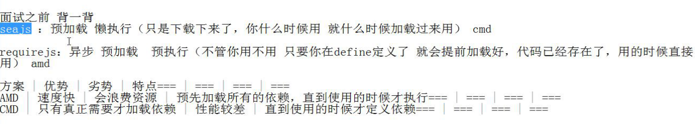

模块化的好处：不同模块的同名函数或者变量没有影响
js中的模块化规范：
AMD:( Asynchronous Module Definition)---异步模块定义---RequireJS---异步，在模块里预先加载依赖，使用的时候直接调用（代码已经存在 ）
---预加载，预执行（加载好依赖之后就去执行这个依赖），速度快，性能较好
---但是会浪费资源，依赖前置（依赖一开始就必须写好，不论执行与否）
---也支持CMD的使用require传递依赖，但是更推崇依赖前置的写法
CMD:(Common Module Definition)---通用模块定义，阿里的玉伯提出---seaJS---使用require函数引入依赖，什么时候用什么时候引入，然后调用
---预加载，懒执行（只是在需要使用的时候提前引入依赖，但只要不需要使用依赖，该依赖就不会被执行），但是性能较差
---依赖就近（直到使用的时候才引入依赖）
AMD和CMD服务于JS在浏览器端的运行
CommonJS----为了JS在后端运行--nodeJS

seaJS的使用：
- 主模块引包
- 在主模块的html页尾中配置seajs
// seajs 的简单配置
seajs.config({
base: "../sea-modules/",
alias: {
"jquery": "jquery/jquery/1.10.1/jquery.js"
}})
seajs.config({
base: "../sea-modules/",
alias: {
"jquery": "jquery/jquery/1.10.1/jquery.js"
}})
// 加载入口模块
seajs.use("./main.js")
- 定义模块及使用
// 所有模块都通过 define 来定义define(function(require, exports, module) {
// 通过 require 引入依赖
var $ = require('jquery');
var Spinning = require('./spinning');
// 通过 exports 对外提供接口
exports.doSomething = ...
// 或者通过 module.exports 提供整个接口
module.exports = ...
// 通过 require 引入依赖
var $ = require('jquery');
var Spinning = require('./spinning');
// 通过 exports 对外提供接口
exports.doSomething = ...
// 或者通过 module.exports 提供整个接口
module.exports = ...
});
require---引入依赖模块--返回一个对象
exports===module.exports---输出模块，只有输出了其他模块才能通过require使用这个模块的功能
导出成员的方式：
1、如果导出的是单个的成员，那么一般使用 exports.成员名称 这种形式导出
2、如果导出的是一个对象，那么一般使用 module.exports 这种形式导出
3.也可以使用return，这个时候可以不传参数，jQuery源码就是这样做的
----->如果要引入jQuery，需要在源码最后手动模块化：（加入红色部分）
if ( typeof noGlobal === strundefined ) {
window.jQuery = window.$ = jQuery;
if ( typeof define === "function" ) {
define(function(){return jQuery});
}
}
注意：不可以两种形式一块使用，否则会以module.exports为准
三个参数一般是不省略的，要省略也是从后面开始
必须先加载后使用
seaJS的同步和异步加载方式：
在main.js中引入m1.js，m1.js中引入m2.js
在m2.js中设置模块内容如下：
define(function(require,exports,module){
console.log(2);
exports.showlo= function () {
console.log('m2');
}
});
同步方式下m1中的模块设置如下：
define(function (require,exports,module) {
console.log(1);
var m2=require('./m2.js');
m2.showlo();
console.log(3);
})
依次打印：
1，2，m2,3
异步方式下m1中的模块设置如下：
define(function (require,exports,module) {
console.log(1);
require.async('./m2.js', function (m2) {
m2.showlo();
});
console.log(3);
})
依次打印：1,3,2,m2
也就是说：异步方式不等待依赖模块的导入，他会去在这期间去执行下一步，之后再回来执行和这个依赖模块有关的回调函数；
同步方式是依次执行，依赖模块不导入完就不执行下一步（事实上，他的执行方式实质也是一步到位，只不过表现起来是同步）
RequireJS的使用：
和seajs的区别:
- 可以直接在main.html的script标签中使用data-main指定入口文件，seajs是使用seajs.use函数定义指定入口文件
- 在主文件中引入依赖文件一般不需要使用require，定义模块的时候在第一个数组参数中注入依赖即可
- 使用return导出成员
相同：都使用define定义模块
使用方法：
1.引包：使用data-main属性指定网页程序的主模块。
<script src="js/require.js" data-main="js/main"></script>
2.入口文件中引入依赖文件--预加载
define(['./r1.js'],function (r1) {
//console.log(r1.add(1,1));
console.log(r1.sum(2, 4));
})
3.定义依赖模块
define(function () {
var obj = {};
obj.sum = function(a,b){
return parseInt(a) + parseInt(b);
};
obj.abstract = function(a,b){
return parseInt(a) - parseInt(b);
}
return obj;
})